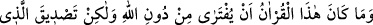
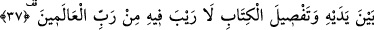
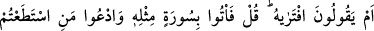
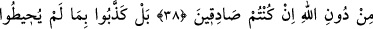
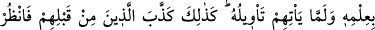
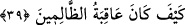
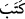

KUR’AN UYDURULMUŞ
DEĞİLDİR
37. Bu Kur’an, Allah’tan başkası tarafından uydurulmuş değildir. Fakat o,
kendinden öncekilerin doğrulayıcısı ve Kitâb’ın açıklamasıdır. Onda asla şüphe
yoktur. Âlemlerin Rabbi tarafındandır.
38. Yoksa “O’nu uydurdu” mu diyorlar. De ki: “Eğer doğru iseniz, haydi Allah’tan
başka çağırabildiklerinizi de çağırın da onun benzeri bir sûre getirin.”
39. Hayır, onlar bilgisini kavrayamadıkları, henüz yorumu da kendilerine
bildirilmemiş olan şeyi yalanladılar. Onlardan öncekiler de böyle yalanlamışlardı.
Bak, o zâlimlerin sonu nice oldu?!
Muhtevasında eşsizliğini gösteren nazım güzelliği, ince mânâları ve kapsayıcı
gerçekleri ile “bu Kur’an, Allah’tan başkası tarafından uydurulmuş değildir.”
Allah’tan başka birinden sâdır olmuş değildir. Çünkü Kur’an gibi bir eser ancak
Allah’ın sözü olabilir.
“Fakat o, kendinden öncekilerin doğrulayıcısı” dinin esasları ve öncekilerin
kıssaları ile ilgili olarak verdiği haberlerdeki muhtevâsı, kendisinden önceki ilâhî
kitapların muhtevasına mutâbık olduğu için, bu ilâhî kitapları tasdik edici “ve Kitab’ın
açıklamasıdır.” Buradaki “kitap” farz kıldı, hükmetti, takdir etti mânâlarındaki “
”
fiilinden gelmektedir. ‘İsbât edilmiş ve kesinlik kazanmış hakikatların ve şer‘î
hükümlerin açıklamasıdır’ demektir.
Kur’ân, hiçbir ilmi elde etmek için ders görmemiş, bu ilâhî kitapları bilenlerin
meclislerinde bulunmamış Biri’nin (s.a.) elinde ortaya çıkmıştır. Böyle olduğu halde
O’nun getirdiği Kur’ân ilâhî kitaplara mutâbık oluyorsa, bu kitabın uydurma olmadığı,
bilâkis Allah tarafından verildiği bilinmiş olur.
et-Te’vîlâtü’n-Necmiyye’de şöyle denilir: “Yani Kur’ân Allah katında, hem ezelî hem